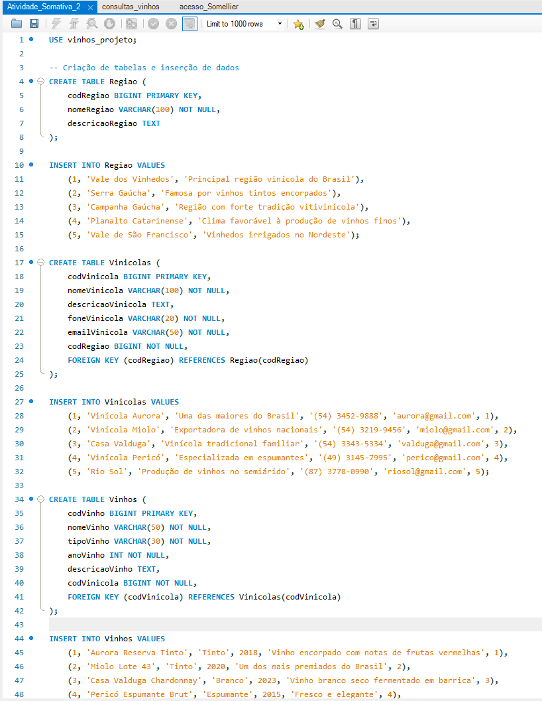

Meus Projetos Acadêmicos
Aqui você encontrará uma seleção dos trabalhos desenvolvidos durante meus estudos, explorando diferentes linguagens e conceitos de programação.
Simulação de Financiamento de Imóveis (Java POO)
Desenvolvido para a disciplina de Fundamentos de Programação Orientada a Objetos, este projeto simula um sistema de financiamento imobiliário. Ele gerencia a criação de novos financiamentos para diferentes tipos de imóveis (casas, apartamentos e terrenos), com validação de dados e persistência através de arquivos de texto e serialização.
Tecnologias: Java, Programação Orientada a Objetos (POO), Manipulação de Arquivos (Texto e Serialização), Tratamento de Exceções.
Sistema de Gerenciamento Acadêmico (Python)
Este projeto é um sistema de gestão acadêmica básico, desenvolvido em Python, com interface de console. Ele simula o gerenciamento de dados essenciais para uma instituição de ensino, permitindo a realização de operações CRUD (Create, Read, Update, Delete) em diferentes entidades como estudantes, professores e disciplinas.
Tecnologias: Python, Manipulação de Arquivos (JSON), Interface de Console.
Banco de Dados de Regiões, Vinícolas e Vinhos (SQL)
Gerenciar informações sobre regiões vinícolas, vinícolas e os vinhos produzidos. Desenvolvido inteiramente em SQL, ele simula um ambiente de dados real, incluindo a definição de tabelas, relacionamentos com chaves estrangeiras, inserção de dados de exemplo, consultas complexas com JOINs, e o gerenciamento de usuários e permissões de acesso.
Tecnologias: SQL, Modelagem de Banco de Dados Relacionais, MySQL (sintaxe).
